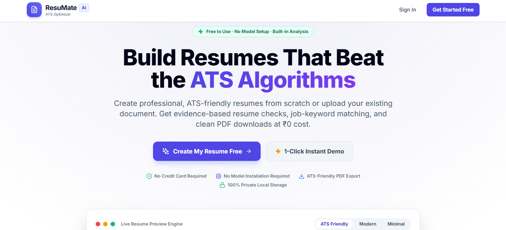
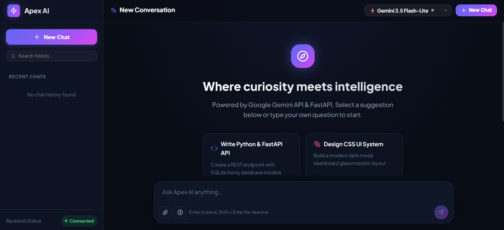
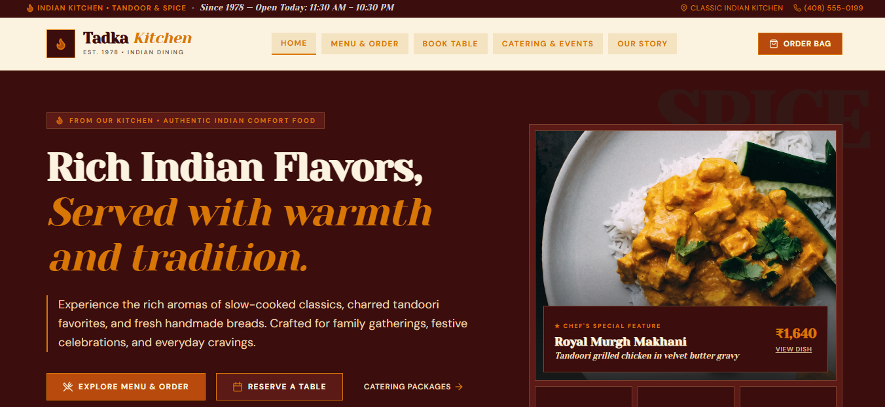

⌘
SOFTWARE ENGINEER · OPEN TO OPPORTUNITIES
Hi, I’m Ravi Patidar.
Software Engineer · Python Full Stack Developer · AI & DevOps Enthusiast
I build practical web applications and explore AI-powered solutions, bringing together Python, React, data analytics, and DevOps workflows.
01 / ABOUT
Curious by nature.
Practical by design.
I’m an Information Technology graduate with hands-on experience across Python development, React applications, DevOps, data analytics, and Generative AI.
Through internships and personal projects, I’ve worked on deploying applications, building API-connected products, creating data workflows, and integrating AI capabilities into software. I enjoy learning by building and turning ideas into useful, maintainable applications.
03Featured projects
03Internship experiences
06Listed certifications
02 / SKILLS
Tools I work with
Grouped by how I use them—no progress bars, just the technologies.
▧
Frontend
⌘
Backend & APIs
▥
Data Analytics
⌁
DevOps & Cloud
✳
AI & Tools
03 / SELECTED WORK
Projects built to solve problems
A selection of web applications and AI-focused work.

01 / CAREER TOOLResumeMate AI
01Resume Builder & ATS Analyzer
A full-stack resume tool to create, edit, and download resumes, review resume quality, and match keywords against a job description.

02 / AI APPLICATIONApex AI
02Full-Stack AI Chatbot
An AI chatbot with streaming responses, file uploads, persistent chat history, web search, and Python code execution capabilities.

03 / E-COMMERCEPunjabi-Tadka
03Food Ordering Web Application
A responsive ordering experience with menu browsing, cart management, order placement, and an admin panel for managing orders and statuses.
04 / EXPERIENCE
Learning through real work
Current training and internship experience across software and analytics.
Full Stack Python Trainee
Naresh i Technologies · Hyderabad
Currently training in Full Stack Python, developing skills in Python programming, web development, and building end-to-end applications.
View my portfolio ↗DevOps Intern
Datagami Technology Services · Indore
- Deployed React applications using Docker and Kubernetes.
- Configured Kubernetes Deployments, Services, and rolling updates.
- Worked with Git and CI/CD workflows for application deployment.
Generative AI & Agentic AI Intern
Datagami Technology Services · Indore
- Built AI applications using Python, LLMs, and AI APIs.
- Applied prompt engineering and agentic workflows for automation.
- Integrated AI capabilities into application workflows.
Data Analytics Intern
Alteryx Focus · Indore
- Created ETL workflows using Alteryx Designer.
- Used Join, Filter, Summarize, Formula, and Cross Tab tools.
- Worked on data transformation and workflow processing.
05 / EDUCATION & CERTIFICATIONS
Education
B.Tech in Information Technology
Medi-Caps University
GPA 6.21 / 10Higher Secondary (12th)
Gayatri Shiksha Niketan
GPA 8.9 / 10Class 10
Govt. Excellence School No. 1
GPA 9.08 / 10Certifications
Agentic AI
EduDron · 2026
Generative AI
EduDron · 2026
DevOps Foundation
EduDron · 2026
Python Programming
DataFlair · 2023
Python Essentials 1
Cisco Networking Academy · 2025
Exploring Artificial Intelligence
IBM SkillsBuild · 2026
Verification links are available where provided.
06 / CONTACT
Have a project
in mind?
I’m happy to connect about software development, AI applications, and opportunities to learn and build.
Send me an email ↗